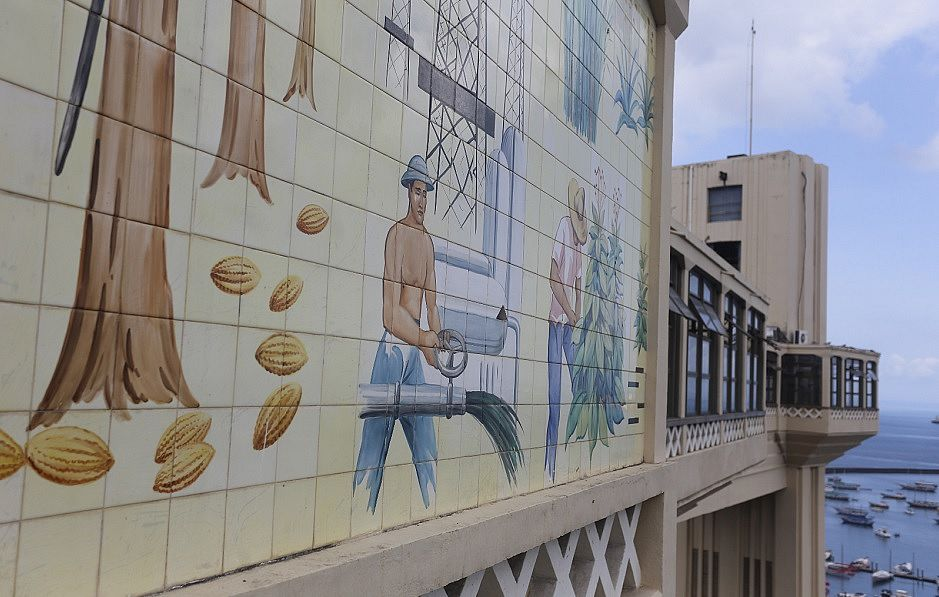
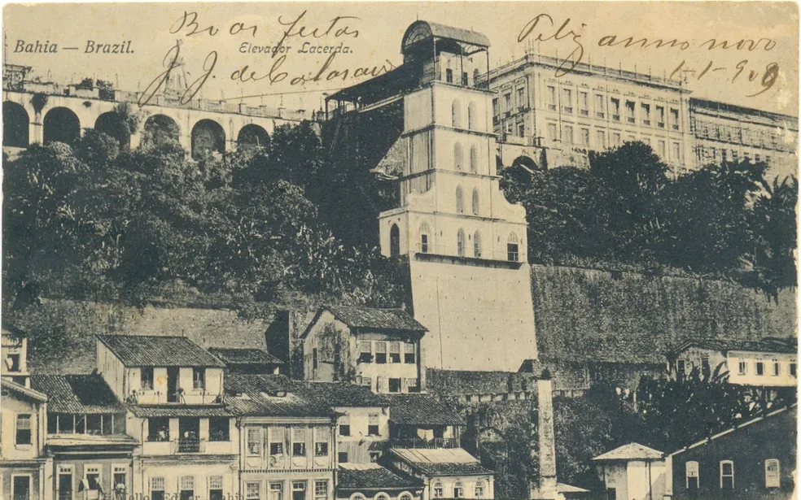

Conhecendo o Elevador
O Elevador Lacerda é um sistema de transporte público da cidade de Salvador, capital do estado brasileiro da Bahia. Trata-se do primeiro elevador urbano do mundo. Em 8 de dezembro de 1873, quando a primeira torre foi inaugurada, era o elevador mais alto do mundo, com 63 metros. A estrutura atual, de 1930, tem 72 metros de altura.[1] Faz o transporte de pessoas entre a Praça Cairu, na Cidade Baixa, e a Praça Tomé de Sousa, na Cidade Alta. É um dos principais pontos turísticos e cartão-postal da cidade. Do alto de suas torres, descortina-se a vista para a Baía de Todos-os-Santos, o Mercado Modelo e, ao fundo, o Forte de São Marcelo.
Construção e inauguração
OA oportunidade de realizar seu projeto surgiu quando a firma Antônio de Lacerda & Cia, cujo principal sócio era seu pai, comprou os direitos de construção de linhas de transporte na encosta e a firma se transformou na Companhia de Transportes Urbanos. A inauguração do equipamento se deu três anos depois e o elevador ficou conhecido popularmente como "Parafuso". Em 1896, o nome oficial foi alterado para "Elevador Lacerda" em homenagem ao idealizador e construtor Antônio de Lacerda.[1] Após a sua inauguração, passou a ser o principal meio de transporte entre a Cidade Alta, onde se encontra o centro histórico, e a Cidade Baixa, local de concentração de atividades financeiras e comerciais em Salvador. Na estrutura inicial, os passageiros tinham de ser pesados individualmente, e o peso total dos passageiros a serem transportados era calculado e somando-os até atingir o limite máximo de segurança. O Barão de Jeremoabo (Cícero Dantas) assim registrou a pesagem dele próprio e de outras autoridades
história
A geomorfologia do local, dois planos separados por uma grande escarpa, era um problema durante a construção de Salvador e que foi crescendo com a expansão da cidade, tornando-se um desafio a ser vencido. A comunicação rápida e confortável entre os dois níveis era uma necessidade numa época em que o transporte era feito através de guindastes e ladeiras íngremes. Porém, o plano do baiano visionário Antônio de Lacerda ao idealizar o Elevador Hidráulico da Conceição - primeiro nome do Elevador Lacerda - não era apenas ligar a parte baixa e alta da cidade, era facilitar o transporte para o sul, sentido em que a cidade se expandia, articulando o elevador com as linhas de bonde.O projeto foi construído em ambiente familiar. Reuniões entre o pai Antônio Francisco de Lacerda, dono de muitas propriedades.
